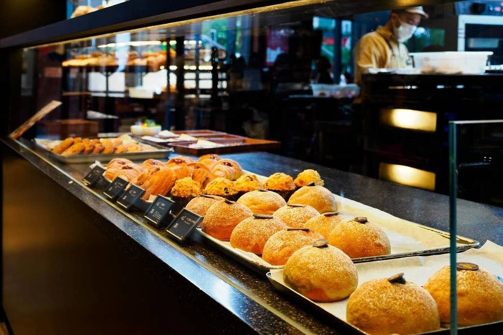

Занаятчийски хляб
Традиционен хляб с дълга ферментация, хрупкава коричка и мек, ароматен център.
Занаятчийски хлябове, сладкиши и десерти, приготвени с любов и внимателно подбрани съставки.
Открий нашия избор от ръчно приготвени хлябове, сладкиши и десерти, правени всеки ден в пекарна „Златна Коричка“.
Традиционен хляб с дълга ферментация, хрупкава коричка и мек, ароматен център.

Маслени кроасани, изпечени рано сутрин за идеална закуска или следобедно кафе.

Ръчно декорирани торти по поръчка за рождени дни, сватби и други специални поводи.
Основната дейност на пекарна „Златна Коричка“ включва ежедневно печене, специализирани поръчки и кетъринг услуги за частни и фирмени събития.
| Категория | Примерен продукт/услуга | Подходящо за |
|---|---|---|
| Ежедневно печене | Домашен хляб, кроасани, банички | Ежедневна консумация, семейства |
| Кетъринг | Асорти мини сладки и соленки | Фирмени събития, конференции |
| Специални поръчки | Сватбена торта, юбилейна торта | Лични празници, специални поводи |
Пекарна „Златна Коричка“ е семейна пекарна, създадена през 2015 г. от семейство Иванови. Започва като малка работилница, а днес е любимо място за пресен хляб в квартала.
Да предлагаме прясно изпечени изделия с честни съставки и да създаваме усещане за дом и топлина за всеки клиент.
Работим с кафенета, офиси и училища в района, но най-важни за нас остават семейните клиенти, които избират нашия хляб за своята трапеза.

От февруари пекарна „Златна Коричка“ ще предлага и специално кафе от малки пекарни, както и повече места за сядане на място.
Подготвили сме специално коледно меню с ароматни щолени, джинджифилови сладки и празнични торти. Приемат се поръчки до 20.12.2025 г.
Организираме уикенд работилници за любители, в които показваме основните стъпки при приготвяне на домашен заквасен хляб.